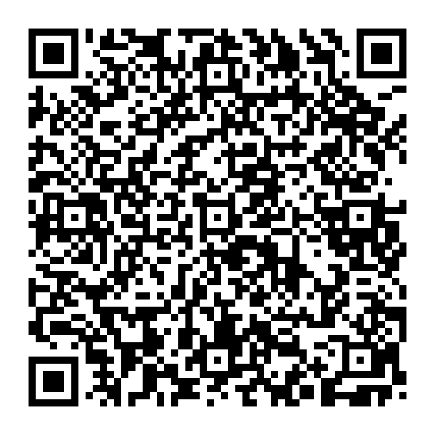
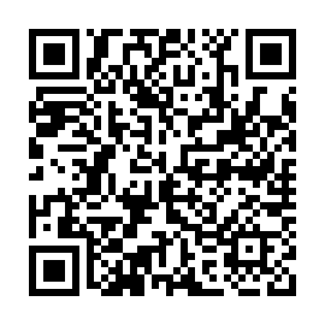

CVCU 心臓術後 急変対応プロトコル
医師・看護師向け統合ガイドライン — スマートフォンで QR を読み取り
🚨 急変対応プロトコル
CALS / 薬剤 / フローチャート 完全版

https://ktonai103.github.io/cardiac-surgery-guidelines/CVCU_Emergency_Response/CVCU_Emergency_Response_Protocol.html
📚 心臓外科ガイドライン ライブラリ
全 18 領域のガイドライン比較

https://ktonai103.github.io/cardiac-surgery-guidelines/
📋 CVCU 急変対応プロトコルに含まれる内容
CALS / CSU-ALS マスターアルゴリズム（VF・無脈性VT / Asystole / PEA の3分岐）
緊急胸骨再開放の5分ルールと手順
薬剤投与プロトコル（量・希釈・経路）— アミオダロン, アドレナリン, β遮断薬 ほか
VF storm 8段階エスカレーション / Torsades de Pointes 鑑別
術後新規心房細動 急性期対応 / 抗凝固判断
V-A ECMO / IMPELLA 適応とカニュレーション規格
CALS 6人チーム ベッドサイド配置図
出典: EACTS 2009 CALS, STS 2017 CSU-ALS, AHA 2025 Part 9, JRC 2020 ACS, ESC 2022 VA/SCD, STS 2026 POAF, JCS 2023 PCPS/ECMO/IMPELLA, ERAS Cardiac 2019